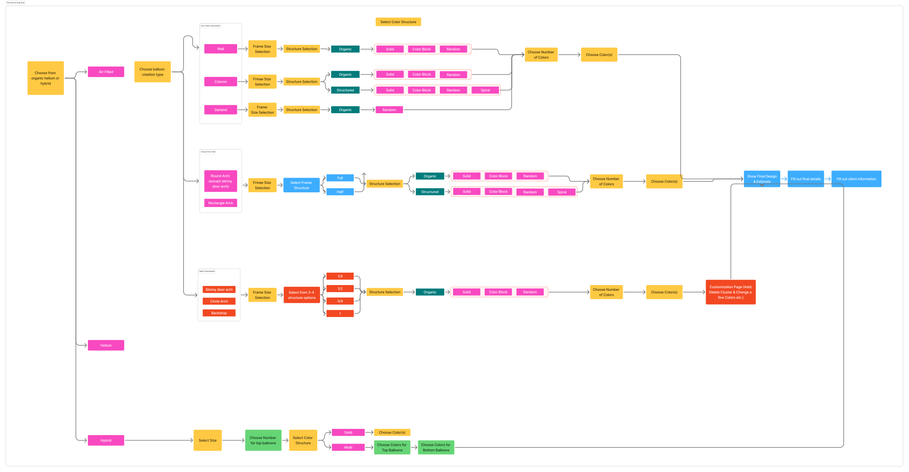
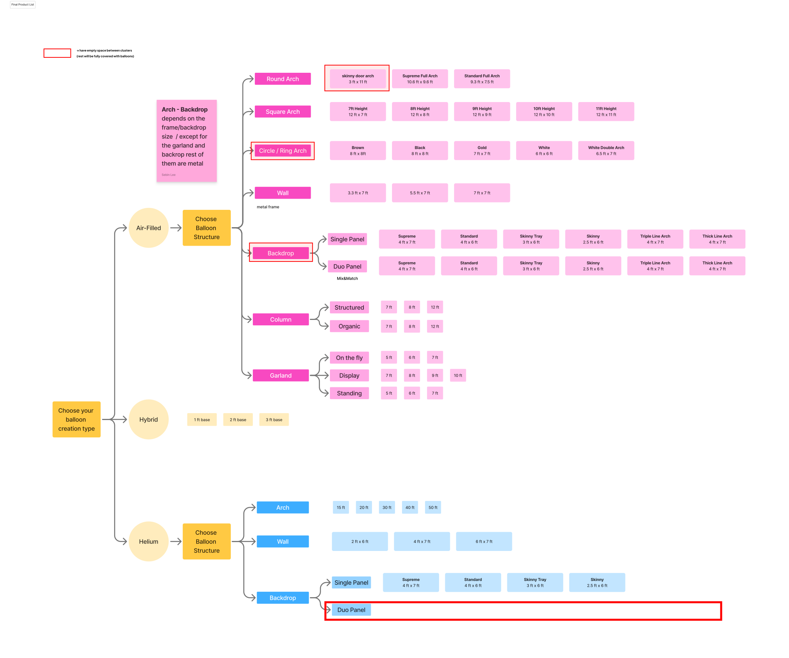
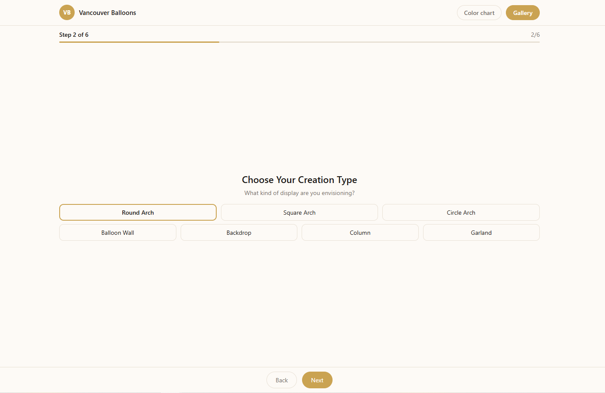
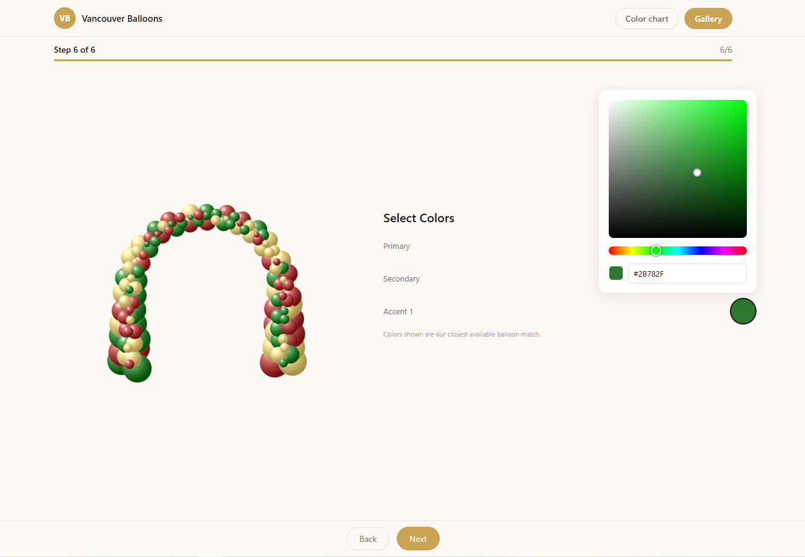
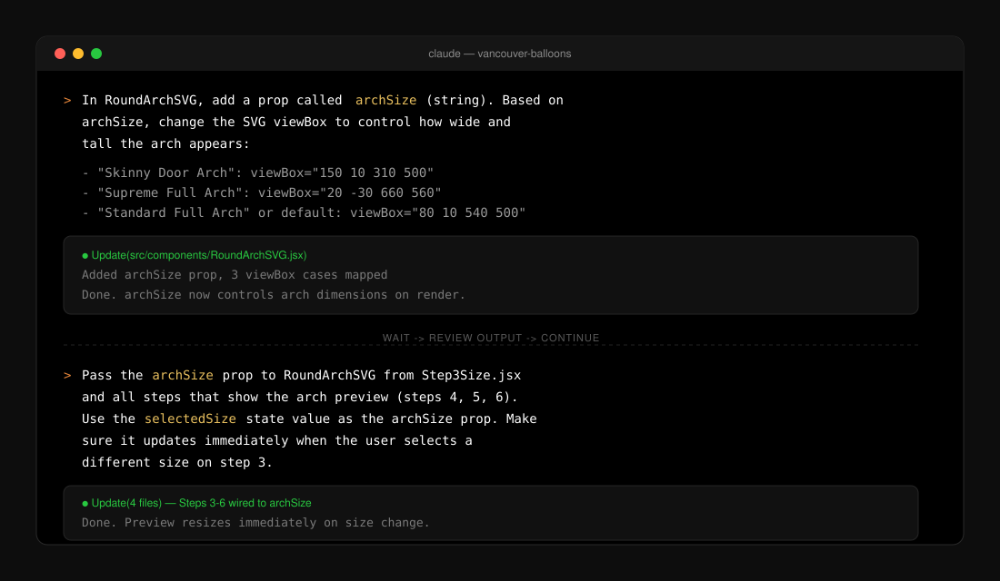
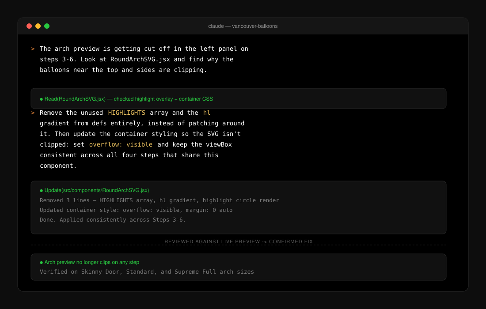

I designed the system.
AI executed it.
Vancouver Balloons was running on manual quotes, long email chains, and staff time spent explaining options customers couldn't visualize. The result is a 6-step configurator where customers can build, preview, and price a balloon arch on their own without any back-and-forth.
Every product decision came from research I ran myself: the flow logic, business rules, and visual system. I created all the design assets and flow documentation first, then used Claude Code to execute it in small, testable steps, reviewing every output against my original spec.
Where I end and AI begins
| My work | AI executed, to my spec |
|---|---|
| Stakeholder interviews and synthesis | React component code |
| Full 8-step product flow and decision tree | SVG gradient math |
| Business rules (pricing, lead times, venue logic) | Boilerplate file structure and wiring |
| All visual assets: flow diagrams, arch SVG, UI design | First-pass code drafts, revised to my spec |
| QA: reviewing output against design intent, not just whether it ran |
Led the UX, the flow, the structure - then broke it into small pieces I could actually review before handing any of it off.
Six interviews.
Every decision traced back.
I talked to six people before opening Figma: the owner, three admin staff, and two regular clients. What came out wasn't a list of feature requests. It was a set of real constraints that shaped how the whole system had to work.
Protect pricing from competitors
He was worried about competitors scraping his quote structure. Pricing needed to be easy for real customers to get but not fully public. That one concern ended up shaping more downstream decisions than anything else. The answer was an email gate: not a full account wall (too much friction), not fully open (too exposed). Just enough protection without turning people away.
×3
Fewer manual quotes to handle
All three were doing every custom quote by hand, going back and forth over email explaining sizes, colors, lead times. They didn't want a new system to babysit. They wanted the repetitive work to stop. So every friction decision in the product came back to that: does this make things easier for them, or does it just move the problem somewhere else?
×2
Figure out options without making a call
Both had ordered before and said the same thing: they had no idea what sizes existed, what colors were available, or what it would cost until they emailed and waited. Talking to them confirmed the need for something self-serve with a real preview and visible price ranges, not just a contact form.
The email gate sits between two options that both had problems: hide pricing completely (customers bounce before they commit) or show it publicly (competitors scrape it). The gate keeps serious customers moving while protecting the business. It came directly from what the owner told me in the interview.
Every branch mapped
before any code.
Before any build started, I mapped the full decision tree in Figma. The configurator runs 8 steps: Balloon Type (Organic / Helium / Hybrid), Style, Size, Color Structure, Number of Colors, Color Selection, Final Information, and Confirm. Every branch, every business rule, every conditional. The flow map was the real product spec. The code came after.


The product at each decision point
Each step branches based on what the customer chose before. The balloon type picked in Step 1 shapes every screen that follows. These are the real screens from the organic MVP, built from assets I designed and fed into Claude Code.




Step 4 is where the flow branches most. Color Structure has four options: Solid, Spiral, Cluster, Random. Each one leads to a different Number of Colors screen and a different picker experience in Step 6. Solid skips straight to one color field. The others open a Primary, Secondary, Accent picker. I had all of this mapped before writing a single prompt.
Early on I had pricing locked behind a full account signup. I changed it. That level of friction was exactly what the staff were trying to get rid of, and it would have cost more conversions than it was worth.
Small prompts,
not one big wish.
Once the map was done, I moved into Claude Code one component at a time, synced across two machines via Git. Each prompt covered one thing. I reviewed every output against my flow map, not just whether the code ran but whether it did what I actually designed.
Step 1 · Scope one thing at a time
This prompt adds an archSize prop to the arch component and maps three viewBox values to it. Nothing else. Keeping scope that tight means the output is easy to check and easy to fix if something's off.

Step 2 · Wire it through the rest of the app
Only after checking Step 1 does the next prompt go out. This one passes the new prop from the size screen through every step that shows the arch preview, so picking a size on Step 3 updates the preview on Steps 4, 5, and 6 consistently. That's how I kept things from quietly breaking further down.

What I made
Every asset in this product came from me: the flow docs, the arch SVG with per-balloon gradients and highlights, the color system, the UI layout. AI didn't generate any of it from scratch. It built against what I already had.
What I directed
At each step: I wrote the instruction, fed in the asset, reviewed the output against my spec, fixed what was wrong, and moved on. The decisions were always mine. AI handled the execution.
The arch clipped.
The code still "worked."
Going through the arch preview step by step, I caught a rendering issue: the balloon arch was being clipped inside the left panel container. The code ran fine. The bug only showed up when you actually looked at it the way a customer would, which is something AI won't do on its own.
Bug 1 · Leftover elements
Unused highlight-gradient elements from an earlier pass were still sitting in the component. Instead of working around them, I removed them entirely: the highlight circle array and all the gradient definitions got stripped out.
Bug 2 · Container clipping
A fixed-height container was cutting off the SVG instead of letting it size naturally. The fix was setting overflow: visible consistently across every step that uses the arch preview, not just the one where I first spotted it.

The color selection screen went through a few layout iterations before it felt right. I adjusted the balance between the arch preview and the controls, and made sure Primary reads first in the swatch hierarchy. Small calls, but they're the difference between something that feels designed and something that feels put together.
AI runs the code. I check whether it actually matches what a customer would see. That review step is where most of the real work happens.
A shipped product that
replaced manual quotes.
The configurator is deployed and in use internally. Customers can build, preview, and price a balloon arch on their own from start to finish. The owner's pricing is protected. Staff handles fewer manual requests. Customers get answers they used to have to wait for.
The arch preview, RoundArchSVG.jsx, started as a visual concept I sketched out and turned into a spec: balloon positions computed along the arch curve, per-balloon radial gradients, specular highlights, and live recoloring as the customer picks their palette. I designed it, documented it, and directed AI to build it step by step.
The configurator is live for the client's internal use. The MVP covers the full organic balloon category — customers can build, price, and submit a quote entirely on their own.
Helium balloons are next. The product logic is more complex, with different size rules and floating time variables, so it's being built as a separate phase. The goal is a single unified configurator that handles both organic and helium from one flow.
What this shows
I ran the interviews and turned what I heard into actual product logic. The pricing gate, the email capture, the lead time handling: each one came from something specific a person told me, not from assumptions.
The full 8-step decision tree was done before I wrote a single prompt. I don't start building until I know how the whole thing fits together. That's what keeps AI from making product decisions on my behalf.
Getting good output from AI means coming in prepared: assets ready, spec written, each instruction scoped to one reviewable thing. And then actually reviewing it. That's the part that takes skill, and it's the part I do.